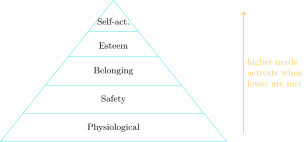

Model
Human-relations school — Elton Mayo (1927)
Motivational theories still focus on the subject but are possibilistic: not the neoclassical rational entrepreneur, but individuals with motivations, perceptions, aspirations and expectations. Man is a multidimensional entity with physical, psychological and social needs; the aim is to induce behaviour coherent with the organization. Hawthorne experiment (Western Electric, Hawthorne Works, Chicago): typists and workers produced more not because of changes in working conditions — lighting, breaks, length of the working day, pay — but because they realized they were the object of attention. Productivity changed for psychological, not sociological (material-condition) reasons.
Maslow's pyramid
| Level (bottom → top) | Example at work |
|---|---|
| 1. Physiological | adequate pay, rest, safe temperature |
| 2. Safety | stable contract, health and safety |
| 3. Belonging, socialization | team, colleagues, informal groups |
| 4. Esteem | recognition, status, career |
| 5. Self-actualization | challenging work, creativity, growth |
A satisfied lower need stops motivating; higher needs become active.
Herzberg's two factors
| Hygiene (prevent dissatisfaction) | Motivators (create satisfaction) |
|---|---|
| pay, working conditions, company policy | achievement, recognition |
| supervision, relations, job security | responsibility, growth, the work itself |
Removing dissatisfaction (hygiene) does not by itself create motivation.
Likert's leadership styles
| Style | Who decides | How subordinates are involved |
|---|---|---|
| Authoritarian | the manager alone | choices imposed, coercion |
| Paternalistic | manager keeps key decisions | delegates execution only |
| Consultative | manager on major decisions | subordinates propose ideas |
| Participative | shared, broad delegation | democratic; manager supervises |
Steve Jobs's style is the classic autocratic example.
Example
An engineer with good pay and a modern lab (hygiene satisfied, Maslow 1–2) but no responsibility or recognition is "not dissatisfied" yet not motivated. A pay rise changes nothing; giving ownership of a module (responsibility, self-actualization) does.
Pitfall
Hawthorne: the cause is attention, not lighting. Herzberg is not Maslow: the two lists are not the same ladder. Consultative ≠ participative: in the first the manager still decides.
Recall
Tell the Hawthorne story in three sentences; draw Maslow's pyramid; give two hygiene factors and two motivators; rank Likert's four styles by delegation.
Picture

Maslow: lower needs first; Herzberg: hygiene at the bottom only prevents dissatisfaction.